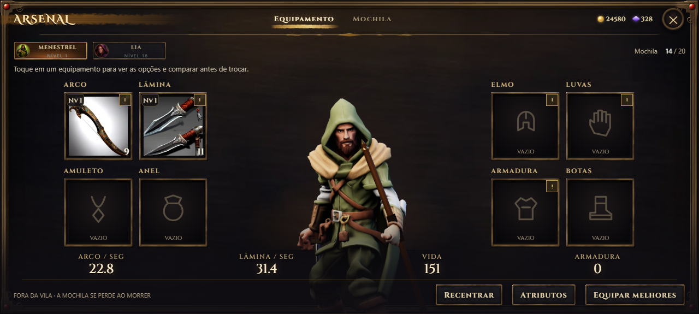
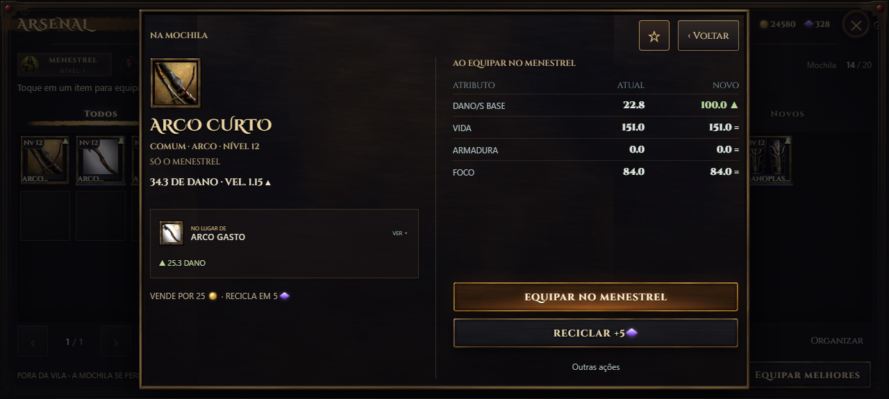
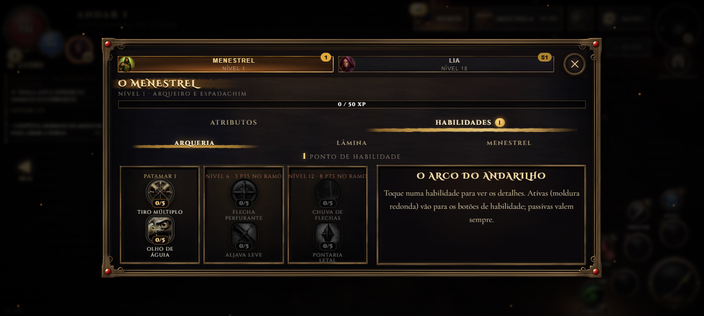
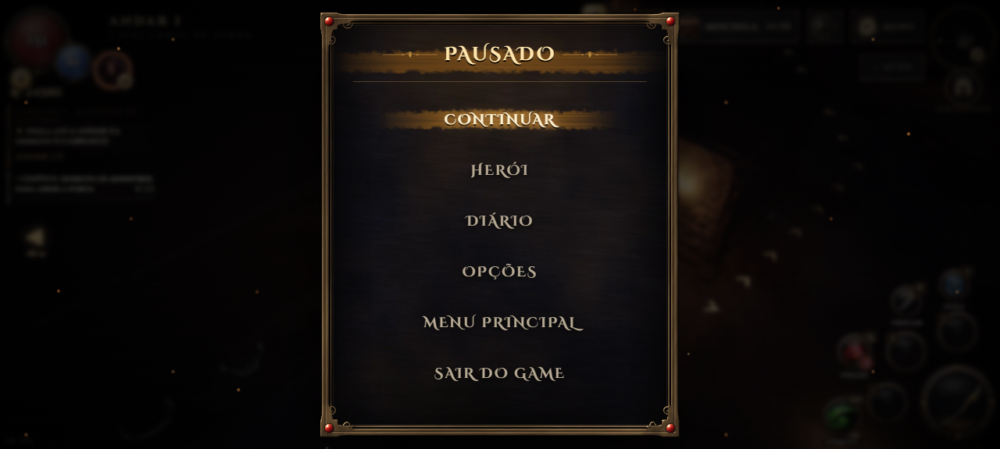

Interface nova
As janelas ganharam fundo de couro escuro pintado e moldura de bronze forjado com volutas e gemas nos cantos. Os títulos ficam sobre uma faixa de tinta âmbar, e a aba ativa ganha um sublinhado de pincelada dourada (na ficha do herói, na cor de cada ramo). Os botões são placas de ferro com aro de latão, o botão de fechar é um medalhão, e as casas de item são rebaixadas, com o brilho da raridade embaixo. Brasas sobem atrás da janela aberta. Os botões do topo da tela e o rastreador de missões seguem o mesmo estilo.



